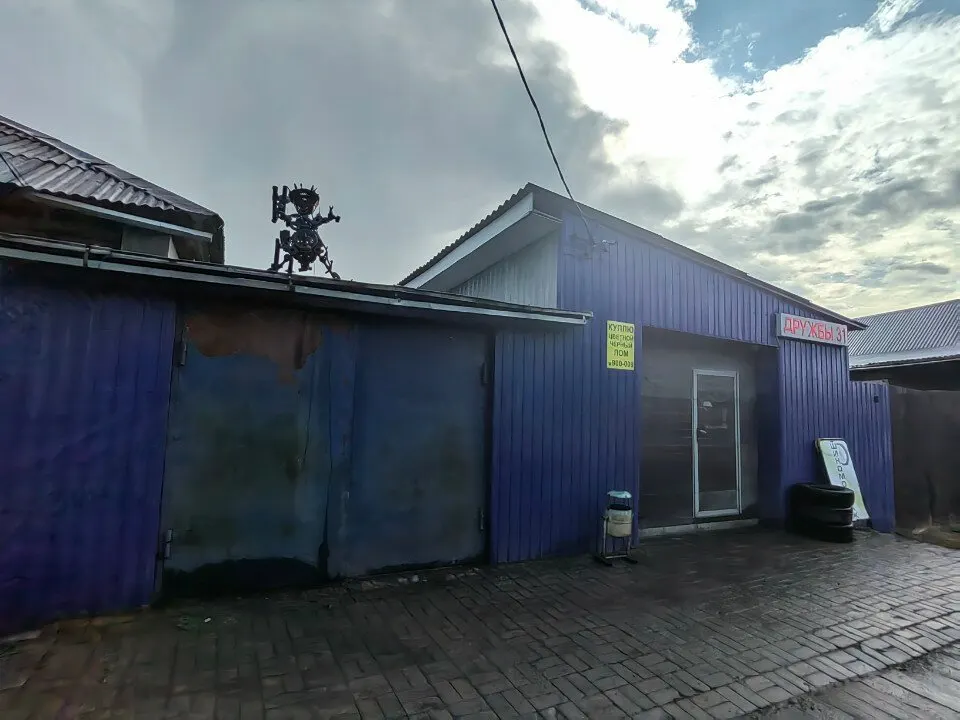
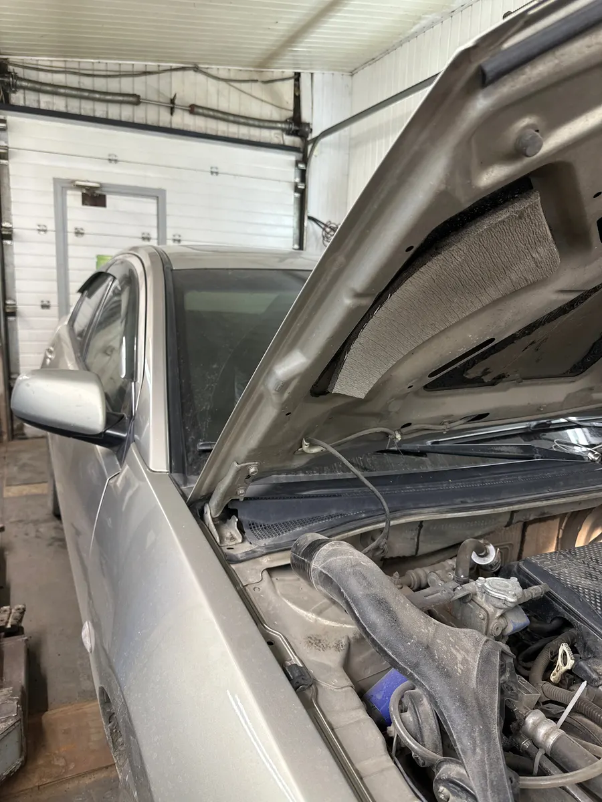
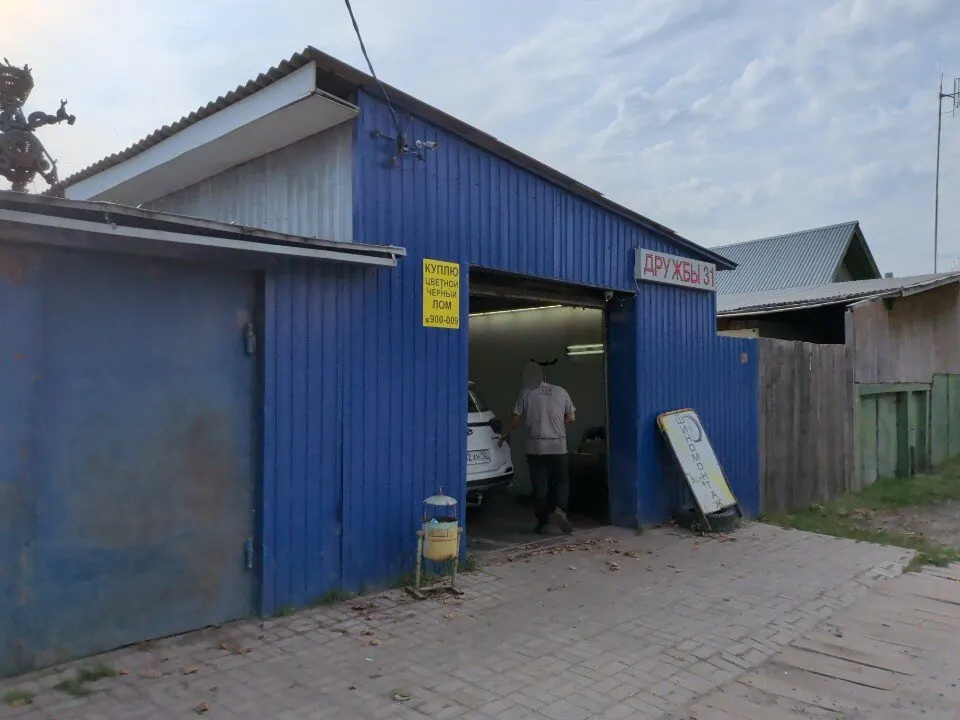
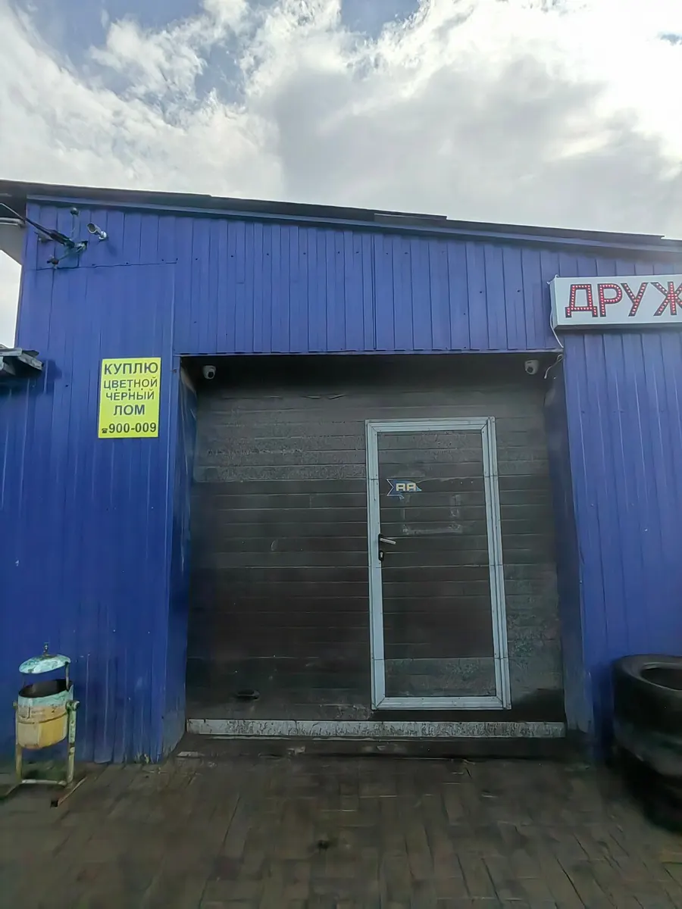

Автосервис в Йошкар-Оле · ул. Дзержинского, 2
Автосервис в Йошкар-Оле: ремонт двигателей и сложные работы
Автосервис на улице Дзержинского: ремонт двигателей, шиномонтаж, обслуживание отечественных и импортных легковых автомобилей. Берёмся и за сложные работы.
- Ремонт двигателей и шиномонтаж
- Отечественные и импортные легковые автомобили
- Диагностика, закупка запчастей и установка

Услуги: автосервис на Дзержинского в Йошкар-Оле
Входит
- Ремонт двигателей
- Шиномонтаж
- Диагностика и поиск поломки
- Закупка запчастей и установка
- Отечественные и импортные легковые автомобили
Отдельно, если нужно
- Запись на время через форму на сайте, затем звонок для подтверждения
- Адрес: Йошкар-Ола, ул. Дзержинского, 2
- Время приёма уточняйте по телефону
Цены на ремонт и обслуживание авто в Йошкар-Оле
Цена зависит от автомобиля и неисправности. Мастер называет стоимость после осмотра, до начала работ.
Ремонт и обслуживание
- Диагностика и поиск неисправностиуточнить
- Ремонт двигателейуточнить
- Шиномонтажуточнить
Точные цены уточняйте по телефону перед выездом.
Как записаться в автосервис в Йошкар-Оле
- 01
Выбрали услугу и время
Выберите услугу, день и час в форме - заявка сформируется, дальше позвоните по номеру +7 (919) 419-45-48. Марку, год и что беспокоит расскажете по телефону.
- 02
Подтвердили время
Время подтверждаем по звонку: +7 (919) 419-45-48.
- 03
Диагностика и согласование
Мастер осматривает автомобиль, называет работы и стоимость. Дальше - по вашему решению.
- 04
Выдача автомобиля
Осмотрите результат вместе с мастером до оплаты.



Что пишут клиенты автосервиса
Берутся за сложные работы
«Мастер лояльный, берется и делает работы от которых отказываются в других мастерских по причине сложности исполнения работ» - SAV, 6 октября 2025.
Находят поломку и чинят
«Выявили поломку, закупили запчасти и всё быстро установили» - Вячеслав К., 1 ноября 2025.
Частые вопросы
Сколько стоит ремонт в Йошкар-Оле?
Стоимость зависит от автомобиля и неисправности. Мастер называет её после осмотра, до начала работ. Точные цены уточняйте по телефону +7 (919) 419-45-48.
Какие автомобили обслуживаете?
Отечественные и импортные легковые автомобили.
Берётесь ли за сложные работы?
Клиенты пишут, что мастер берётся за работы, от которых отказываются в других мастерских. Возможно ли это для вашей машины, скажут при звонке.
Делаете ли шиномонтаж и ремонт двигателей?
Да, шиномонтаж и ремонт двигателей входят в услуги автосервиса.
Как записаться?
Выберите услугу, день и время в форме на сайте, затем позвоните по номеру +7 (919) 419-45-48, чтобы подтвердить время.
Где находится автосервис?
Йошкар-Ола, улица Дзержинского, 2.
Запишитесь на ремонт или диагностику в Йошкар-Оле
- Адрес
- ул. Дзержинского, 2, Йошкар-Ола
- Часы
- время приёма уточняйте по телефону
- Телефон
- +7 (919) 419-45-48